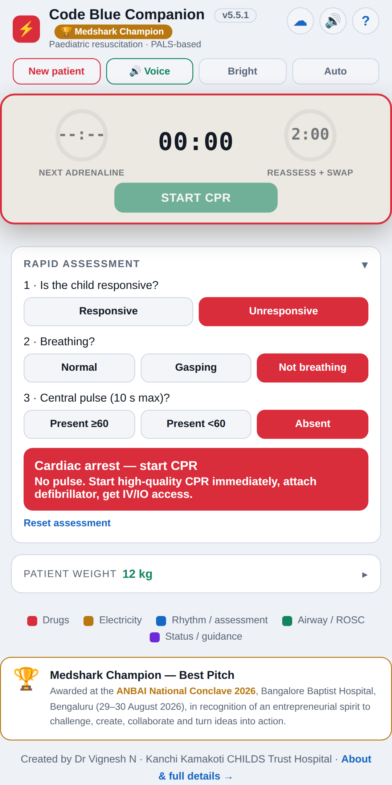
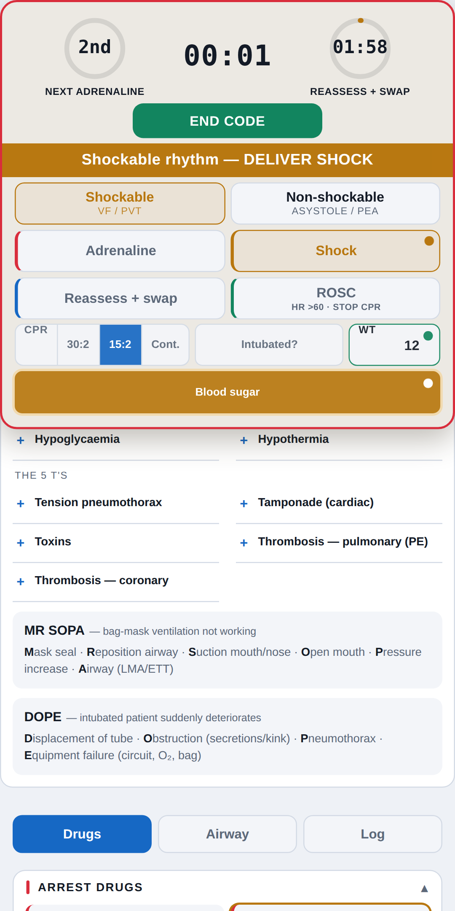

Code Blue Companion Live
cbc.pediaos.com
Pediatric resuscitation decision-support, aligned with AHA PALS 2020/2025 and APLS weight estimates. Enter a weight (or estimate it from age) and every dose is calculated for you.
- Rapid assessment — tells the team if it’s an arrest and what to do next.
- Weight-calculated doses — arrest drugs, RSI agents, infusions and equipment sizes, with safe caps.
- Arrest console & timers — adrenaline, reassessment and shocks cued on time, with voice read-out.
- Code log — every action timestamped for debriefing and quality improvement.

